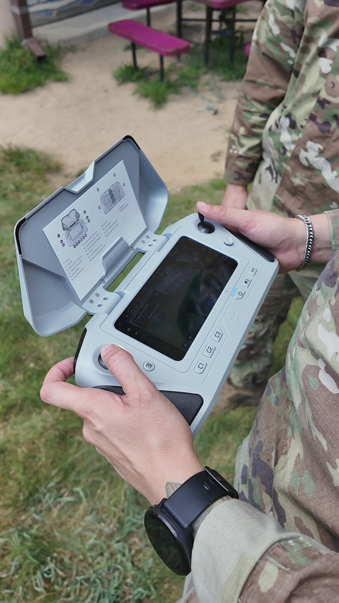

Four systems, one doctrine: perception, denial, and spectrum control processed on-device — not in a datacenter a thousand kilometers from the fight.

Every Aranruth system shares the same spine: sensor input, edge processing, structured output, and a control interface built for operators — not data scientists. SELIXOR answers what occupies the volume. ARGUS answers what moves inside it. WRAITH decides who owns the spectrum. BANSHEE denies the air to anything that flies on sound alone. Each system runs standalone at a perimeter, or federated as one layered denial architecture.
Camera-less volumetric sensing. SELIXOR establishes occupancy of a protected volume without optical capture — no imagery leaves the node, because no imagery is ever produced. Built for critical sites where photography itself is a legal or security liability: munitions depots, energy nodes, command facilities, and perimeters governed by privacy statute.
| PARAMETER | VALUE |
|---|---|
| Modality | Non-optical volumetric occupancy sensing |
| Primary output | Occupancy state, position, and track of bodies inside the protected volume |
| Imagery produced | None. No frames, no stills, no optical capture at any stage |
| Deployment | Fixed perimeter installations; indoor and outdoor volumes |
| Program channel | Hosted and briefed at selixor.cloud — direct program channel |
An edge-computed multi-spectral vision engine. ARGUS ingests continuous visible and short-wave infrared imagery, converts raw sensor data into machine-generated tracks and classification data, and maintains subject identity through gait, cadence, and proportional movement signatures — without making facial appearance the primary signal. Detection, classification, and position estimation occur close to the sensor, on hardware that keeps working when the link is gone.
| PARAMETER | VALUE |
|---|---|
| Mission domain | Persistent sensing & perimeter security |
| Sensor input | Visible + SWIR, from airborne, perimeter, or fixed installations |
| Processing | Edge AI — local feature extraction, real-time inference |
| Output | Track / position / classification, structured for downstream systems |
| Identification method | Gait, cadence, proportional movement — face not required |
| Integration posture | Sensing component inside a larger mission architecture |
Autonomous spectrum management and coherent deception built on Digital Radio Frequency Memory. WRAITH begins from the assumption that interference, malicious electronic scanning, and degraded communications are the operating condition — not the exception. Software-defined control of the electromagnetic environment around a critical area, with low-latency digital signal processing as a primary architecture requirement rather than a secondary optimization.
| PARAMETER | VALUE |
|---|---|
| Function | Autonomous spectrum management — usable or contested |
| Core architecture | DRFM — digital retention and processing of RF signal information |
| Processing | Real-time FFT on specialized FPGAs, inside the signal path |
| Response model | Low-latency; reacts inside the interference window |
| Control | Software-defined, autonomous employment modes |
| Layered roles | Resilience, controlled deception, sensory control; masking of automated power-grid nodes against malicious electronic scanning |
Passive acoustic denial. BANSHEE's perimeter-deployed acoustic sensor networks operate in pure receive-only mode: no radio emissions, nothing for an adversary's direction-finding kit to lock onto. Combat-hardened neural nets isolate Rotor Blade Passing Frequencies (BPF) amid heavy ambient battlefield noise and artillery, then classify and neutralize rotary-wing threats — including swarms that emit no radio at all.
| PARAMETER | VALUE |
|---|---|
| Sensing | Passive acoustic arrays — receive-only, zero RF emission |
| Classification | BPF isolation via hardened neural nets under battlefield noise |
| Threat set | Single rotors and RF-silent swarms; Class I UAS and below |
| Deployment kits | FOB / MRAP / PACK — fixed base, mobile convoy, dismounted |
| Interoperability | ATAK / BMS ready — C4ISR integration path |
| Program intake | Defense-secure channel via bashee.html intake portal |